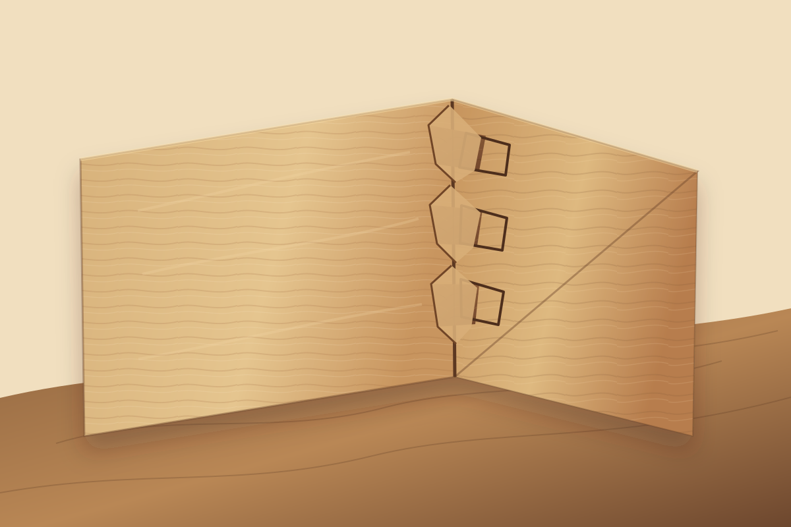

서랍 도브테일 결구가 오래 쓰이는 이유

서랍은 조용해 보이지만 가구에서 가장 반복적인 힘을 받는 부분입니다. 손잡이를 당길 때 앞판은 앞으로 끌려 나오고, 서랍 옆판은 레일이나 홈을 따라 남아 있으려는 저항을 받습니다. 무거운 그릇, 문구, 의류가 들어 있을수록 이 힘은 앞 모서리에 집중됩니다. 그래서 서랍 제작에서는 앞판과 옆판을 어떻게 연결하는지가 사용감과 수명을 크게 좌우합니다.
도브테일 결구는 영어의 dovetail, 곧 비둘기 꼬리처럼 벌어진 사다리꼴 모양에서 이름이 온 결구입니다. 한쪽 부재에는 꼬리처럼 넓어지는 tail을 만들고, 다른 부재에는 그 모양을 받아들이는 pin을 냅니다. 두 부재가 맞물리면 단순히 접착면으로 붙는 것이 아니라, 형태 자체가 빠지는 방향을 막아 줍니다.
서랍 앞 모서리에 힘이 모이는 이유
서랍을 열 때 사용자는 대개 앞판 중앙이나 손잡이를 잡아당깁니다. 이때 앞판은 몸쪽으로 움직이려 하고, 옆판은 서랍 몸체와 레일 사이의 마찰, 내부 물건의 무게, 좌우 비틀림을 함께 받습니다. 단순한 맞대기 접합이라면 앞판과 옆판 사이의 접착층이나 못, 나사가 이 힘을 직접 견뎌야 합니다.
도브테일은 이 상황에서 유리합니다. 꼬리 모양이 바깥쪽으로 벌어져 있기 때문에 앞판이 빠지는 방향으로 당겨져도 옆판과 앞판이 기계적으로 걸립니다. 접착제는 결구를 안정시키는 역할을 하지만, 구조의 핵심은 목재 형상이 서로 물리는 데 있습니다. 좋은 도브테일 서랍이 오래 써도 앞판이 쉽게 벌어지지 않는 이유가 여기에 있습니다.
사다리꼴이 만드는 기계적 잠김
도브테일을 직각 홈과 구분하는 핵심은 옆면의 각도입니다. 사각형 톱니가 반복되는 박스 조인트는 접착면이 넓고 만들기 쉽지만, 부재가 빠지는 방향을 형상만으로 막는 힘은 제한적입니다. 반면 도브테일은 넓은 쪽과 좁은 쪽이 달라서 조립 방향이 정해지고, 조립된 뒤에는 반대 방향으로 쉽게 빠지지 않습니다.
이 특성 때문에 도브테일은 서랍 앞판, 함, 작은 상자, 케이스 가구의 모서리에서 오래 쓰여 왔습니다. 특히 서랍처럼 앞뒤로 반복해서 움직이는 부재에서는 결구가 단순한 장식이 아니라 하중 경로를 정리하는 구조가 됩니다. 손잡이를 당기는 힘이 한 줄의 나사에만 몰리지 않고, 여러 개의 핀과 꼬리를 통해 모서리 전체로 나뉩니다.
반턱 도브테일과 관통 도브테일
서랍에서 흔히 비교되는 방식은 관통 도브테일과 반턱 도브테일입니다. 관통 도브테일은 앞판과 옆판을 통과한 결구가 바깥에서 모두 보이는 방식입니다. 제작 흔적이 솔직하게 드러나고, 상자나 공예 가구에서는 그 자체가 시각적 리듬이 됩니다.
반턱 도브테일은 서랍 앞면에서 결구가 보이지 않도록 앞판 일부를 남겨 두고 옆판을 끼우는 방식입니다. 전면은 깨끗하게 유지하면서도 옆판과 앞판은 도브테일로 맞물립니다. 서랍장이나 수납장처럼 전면의 연속된 나뭇결, 손잡이 위치, 문짝과의 정렬이 중요한 가구에서는 반턱 도브테일이 차분한 인상을 줍니다.
어느 방식이 더 좋다고 단정하기보다는 가구의 성격에 맞게 고르는 것이 중요합니다. 제작성을 중시하는 가구, 구조를 보여 주고 싶은 가구, 전면을 조용하게 정리해야 하는 가구가 각각 다르기 때문입니다.
정확도는 장식보다 구조에서 드러납니다
도브테일은 겉으로 보기 좋은 결구이지만, 장식처럼만 다루면 오히려 약해질 수 있습니다. 핀과 꼬리 사이가 헐거우면 접착층에 의존하게 되고, 너무 빡빡하면 조립 과정에서 부재 끝이 갈라지거나 모서리가 터질 수 있습니다. 결구의 각도와 깊이, 어깨선, 반복 간격이 함께 맞아야 합니다.
좋은 서랍은 열고 닫을 때 앞판이 단단히 따라옵니다. 모서리가 벌어지는 느낌이 없고, 내부 물건이 한쪽으로 쏠려도 앞판과 옆판 사이에 불안한 유격이 생기지 않습니다. 도브테일의 품질은 멀리서 화려하게 보이는 무늬보다 손으로 당겼을 때의 안정감에서 먼저 드러납니다.
현대 가구에서도 여전히 의미가 있을까
오늘날 모든 서랍에 도브테일이 필요한 것은 아닙니다. 금속 서랍 시스템, 정밀 레일, 합판 박스, 전용 커넥터는 제작 효율과 균일한 품질 면에서 큰 장점이 있습니다. 이동과 분해가 잦은 가구나 대량 생산 가구에서는 다른 방식이 더 합리적일 수 있습니다.
그럼에도 도브테일은 여전히 의미가 있습니다. 사용자가 자주 만지고 힘을 주는 서랍 앞 모서리에 목재끼리 맞물리는 구조를 두면, 제작자의 의도와 가구의 내구성이 함께 읽힙니다. 특히 원목 서랍, 수공예 수납장, 오래 쓰는 개인 가구에서는 보이지 않는 철물보다 보이는 결구가 더 설득력 있는 경우가 많습니다.
가구를 고를 때 살펴볼 점
도브테일 서랍을 볼 때는 결구가 있다는 사실만 보지 말고 몇 가지를 함께 살펴보는 것이 좋습니다.
- 핀과 꼬리의 모양이 사다리꼴로 정확히 맞물리는지 확인합니다.
- 앞판과 옆판 사이에 벌어진 틈이나 과한 메움 흔적이 없는지 봅니다.
- 서랍을 당겼을 때 앞판이 흔들리거나 따로 움직이지 않는지 확인합니다.
- 서랍 바닥판이 옆판과 앞판에 안정적으로 들어가 있는지 살핍니다.
- 보이는 결구가 가구 전체의 비례와 마감 수준에 어울리는지 봅니다.
좋은 결구는 가까이 보아도 과장되지 않습니다. 선이 차분하고, 손으로 만졌을 때 모서리가 정리되어 있으며, 서랍의 움직임과 어울립니다. 도브테일은 기술을 자랑하기 위한 무늬가 아니라 반복 사용을 견디기 위한 구조이기 때문입니다.
목간의 시선
목간이 서랍을 볼 때 중요하게 생각하는 것은 앞면의 아름다움과 내부 구조의 균형입니다. 서랍은 매일 열고 닫는 작은 가구 안의 가구입니다. 앞판의 결, 손잡이의 위치, 레일의 부드러움이 모두 중요하지만, 그 힘을 실제로 받아내는 모서리 결구가 약하면 좋은 사용감은 오래 유지되기 어렵습니다.
도브테일 결구는 오래된 방식이지만 과거의 장식만은 아닙니다. 당기는 힘을 목재의 형상으로 받아내고, 서랍 앞판과 옆판을 하나의 상자로 묶어 주며, 제작자의 정확도를 조용히 드러냅니다. 좋은 서랍은 닫혀 있을 때보다 열고 닫는 순간에 더 많은 것을 말합니다.